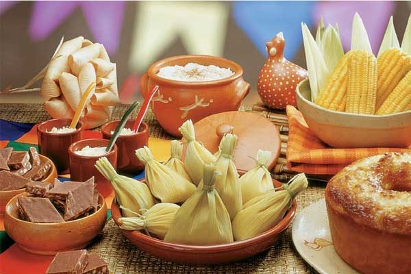
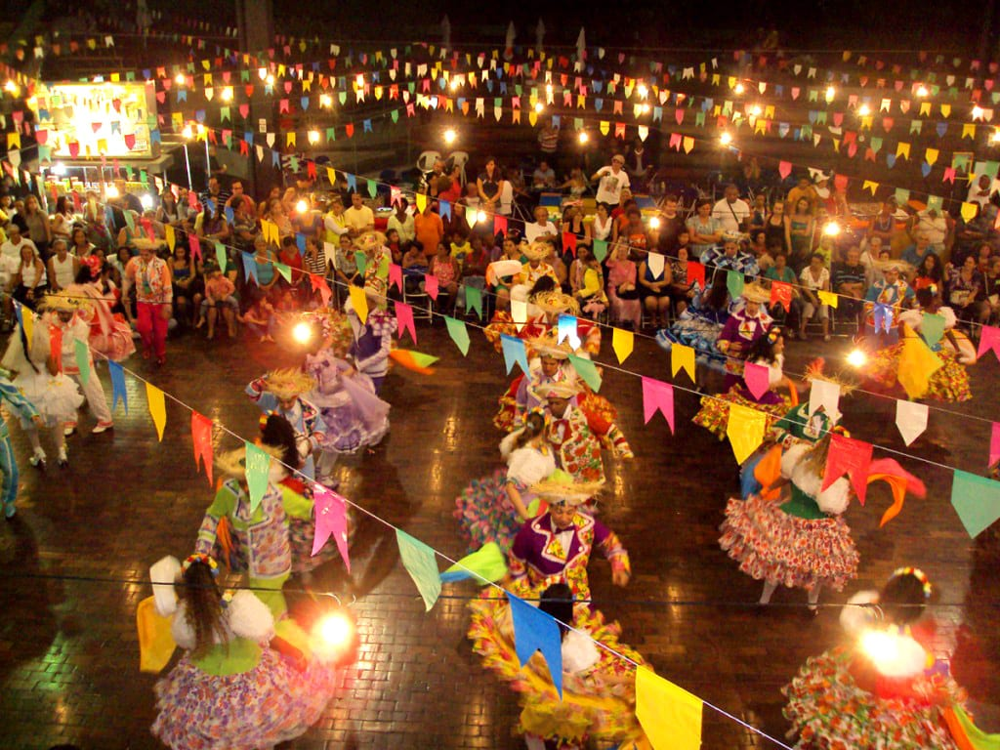

A festa junina é uma expressão autêntica da cultura popular brasileira. Ela preserva costumes do interior do país — como o uso da roupa caipira, o sotaque marcado nas encenações e as danças coletivas — e os transporta para ambientes urbanos. Isso gera um sentimento de pertencimento e identidade, tanto para quem vive no campo quanto para os que moram na cidade, pois todos se reconhecem em partes desse universo.

Durante os meses de junho e julho, a festa junina movimenta fortemente a economia local. No campo, produtores rurais têm uma oportunidade de escoar alimentos típicos como milho, amendoim, mandioca e derivados. Nas cidades, costureiras, artesãos, músicos, decoradores, vendedores ambulantes e organizadores de eventos encontram uma fonte de renda valiosa. Festas grandes, como as de Caruaru (PE) e Campina Grande (PB), são exemplos claros de como a cultura rural pode impulsionar o turismo urbano e gerar desenvolvimento econômico. Essas festas atraem turistas do Brasil inteiro, promovendo não só entretenimento, mas também negócios, ocupação hoteleira e visibilidade regional.
Outro ponto importante é a forma como a festa junina estimula a convivência entre pessoas de diferentes contextos sociais. As festas são geralmente comunitárias, organizadas por moradores, igrejas, escolas ou associações, e envolvem colaboração mútua. Nesses espaços, moradores urbanos e rurais se encontram, trocam saberes, compartilham alimentos e celebram juntos. No campo, a festa ainda é um momento de agradecimento à terra pelos frutos colhidos. É um tempo de pausa, de orações, de rezas às colheitas e às chuvas. Esse aspecto espiritual e simbólico da relação com a natureza é algo que as festas urbanas tentam manter, mesmo que de forma mais simbólica.
